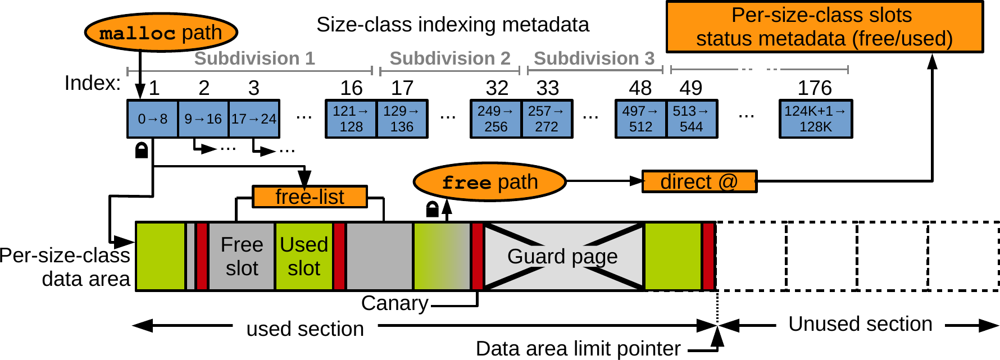

CS 107Heap Allocator
Designed and implemented FIR and IIR filters in MATLAB and Julia to analyze frequency-domain behavior of audio signals. Explored windowing methods and compared magnitude/phase responses across filter types.
View Project →